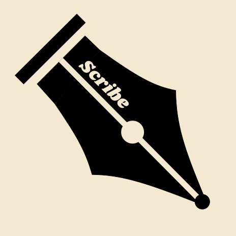

Scribe - Search-first Handwriting Launcher/Terms of UseTerms of Use
Effective Date: December 12, 2025
Welcome to Scribe Launcher, a minimalist manual Android launcher designed to promote intentional and conscious phone usage. These Terms of Use ("Terms") govern your use of the Scribe Launcher app ("App"), developed by Timothé Ameline ("we", "us", or "our"), operating under the developer name Mars Interactive.
Mars Interactive is not a registered legal entity — it is a developer alias.
By downloading or using Scribe Launcher, you agree to these Terms. If you do not agree, do not use the App.
1. Eligibility
You must be at least 13 years old to use Scribe Launcher. If you are under your jurisdiction's legal age of majority, parental or guardian permission is required.
2. User Responsibilities
- You are responsible for the safety and configuration of your device.
- You agree not to misuse or modify the App beyond its intended purpose.
- You agree not to use the App for any illegal, malicious, or harmful activities.
- You acknowledge that setting Scribe as your default launcher replaces your device's home screen experience.
3. Features and Limitations
Scribe Launcher offers features such as:
- Handwriting-based app search
- Minimal home screen replacement
- Optional keyboard-based search
- Optional quick-access app slots
- Full app drawer as a fallback
We may modify, add, or remove features over time.
4. Data and Privacy
Scribe Launcher operates entirely offline. No accounts, servers, or analytics. All preferences and configurations are stored locally on your device. The App never transmits data externally. You are solely responsible for backing up your data using your own tools if desired.
5. Intellectual Property
All code, design, and visual assets of Scribe Launcher are owned by Timothé Ameline.
You may not:
- Copy, redistribute, or sell the App
- Modify or create derivative works
- Use the App's branding for other projects without permission
6. Disclaimers
The App is provided "as is" without warranties of performance, accuracy, or fitness for purpose. We do not guarantee uninterrupted operation, handwriting recognition accuracy for all writing styles, or compatibility with all devices.
7. Limitation of Liability
To the maximum extent permitted by law, Timothé Ameline / Mars Interactive shall not be liable for any indirect or consequential damages arising from the use of Scribe Launcher.
8. Updates to These Terms
We may update these Terms as Scribe evolves. Continued use after updates constitutes acceptance.
9. Contact
For support or legal questions: mars_interactive@proton.me